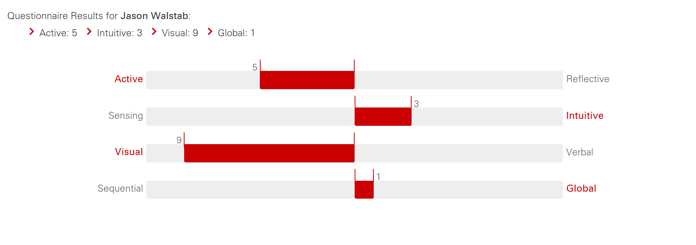
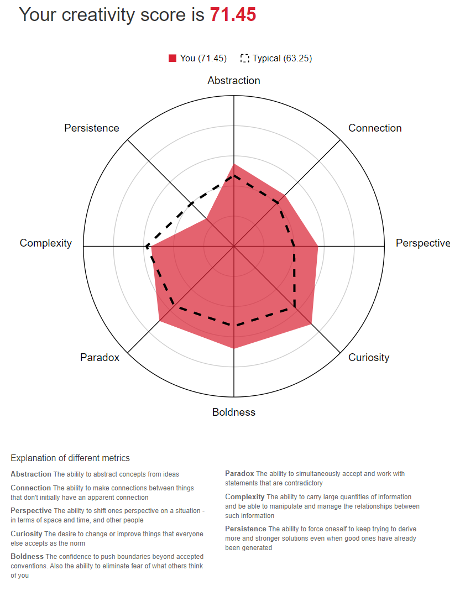

Personal Information
Student Number: s3291269
Email: s3291269@student.rmit.edu.au
Nationality: Australian
Languages spoken: English and Mandarin Chinese
Education: Certificate IV in Networking Technology (TAFE NSW)
Hobbies: Electronics, programming, surfing, gym and motorbike riding.
Hi my name is Jason, I am 30 years old and have been living in Nan Jing China for almost a decade with my wife and son. I run a small IoT business involved with remote monitoring of medical and electrical devices and am looking forward to being able to achieve a higher education to help me move ahead with my work here. Pictured on the left side menu is my messy work desk!
Interest in IT
I've always had a great interest in IT, starting with using Amiga computers all the way to now. My father would probably be the catalyst for my interest in IT, as he used to bring back old systems from the office where he worked for me to try and fix/play with. As soon as I could I finished a TAFE networking certificate, and then began to work in level one helpdesk support at the age of 19. From there, I worked my way up to system admin, working with scripts and UNIX systems, until I left this job and began to work in medical IT on Philips brightview CT systems. I then fostered an interest in IoT. I left Australia and moved to China to work with someone starting a business in IoT applications, which I now do full time, the website is at: www.quantumdata.com.au.
I have chosen RMIT as it is %100 online, so I can finally get proper IT qualifications to help with my work. I expect to learn a lot through this degree that I have chosen (Bachelor of IT), and am especially hoping to learn more about the base concepts of programming as well as the proper ways to do things. Sometimes I feel like there are huge gaps in my knowledge thanks to my lack of formal qualifications.
Ideal Job
My ideal job would be a position like this, working with IoT technology and helping to design and implement new solutions. This job is especially appealing to me as I can see it is dealing with new IoT technologies of which I really enjoy working with and learning about, as I believe IoT is going to be a huge industry over the next couple of decades, utilizing the latest tech and covering all aspects of IT, from electronics, programming, networking, website design, cloud and database technology without being locked into a single area of IT.
I believe a job like this would require a great understanding of many aspects of IT, needing a strong technology expertise background as well as leadership and project management abilities. As I have been working with IoT for a while I think I would have lots of experience to add to a role such as this (especially related to cloud/PLC modbus programming and LoRa networking), however it is difficult to show these skills and experience without a solid formal qualification backing up my work. Another challenge would be seeing how another company manages and implements IoT solutions, why they choose the tech that they use and working with a team to accomplish this. I think here I could add some of my current solutions and show how and why I've implemented them as I have, as well as share my current co-workers knowledge and what they have taught me over the years.
This job was found on the seek job website, the direct URL is: https://www.seek.com.au/job/40424378?type=standard&searchrequesttoken=4087bb33-dcbf-4cf6-954b-8b41f21d2be3
Personal Profile
Myer Briggs style test results: ENTP-T
https://www.16personalities.com/ Reference[2]
Reference[2]
Learning styles test
https://www.webtools.ncsu.edu/learningstyles/  Reference[3]Creativity Test
http://www.testmycreativity.com/  Reference[4]Reflection on test results
After taking these tests I can say these results give me a rounded general overview of the kind of person I am, and how I learn best. If I assume these tests to be accurate, I could say that my personality being one of extroversion does help a lot with working with people, however I should be careful of upsetting other people and taking the time to listen and take others ideas and feelings into account. Based on these results I think it would be important for me to work with people who are more organised and rounded, to keep my ideas on the ground and expectations realistic.
Project: Independent Temperature Sensor Network
Overview
I propose a project of building cheap temperature sensor connected to either a Raspberry pi or an ESP32 which will send temperature data to an online portal. A portal and API can be created and run on a basic nodeJS webserver, which accepts data sent to it via HTTP post methods. The data will then be shown on a real time chart, updating and displaying the information of the temperature sensor. The idea being it is a prototype, cheap, open source way to log temperature information, and can be done operated by anyone even if they do not have IT knowledge. As an option, it could have logging enabled to store historic data, or convert daily values to averages to be looked at later.
Motivation
I think independent temperature tracking devices is important in today's world to help monitor and react to climate change events. Open source worldwide temperature monitoring could be used to show honest and accountable information about the changing temperatures across the globe and help to keep honest and open source recordings of temperature changes as well as spread awareness of the threat facing the globe today. I believe climate change will be one of humanities greatest challenges, and that IT is one of the tools that will be used to research/monitor/contain the problems we may face in the future. Building a project such as this is a small way to link these two ideas together and also link both climate science and computer science together too.
While I know this is not a novel idea and has been done before, I still support the creation of grass roots temperature monitoring equipment and technology.
Description
This project would have the following features:
- Able to get temperature readings from an IoT unit (Raspberry Pi or ESP32).
- Temperature readings
- The data can be accessed on a web portal hosted on a cloud server
- Data can be recorded as needed
The project will consist of three parts, a web portal, a web API and a Raspberry Pi or ESP32 unit with a temperature sensor attached (referred to as the IoT unit from here on). The web portal, built in nodeJS or Django and hosted on a Linux cloud service such as DigitalOcean (alongside with the API), will be used to view all temperatures logged by the IoT units. It should be able to show both a real time chart, table data, as well as be able to look at historical data stored in a database. To save space in the database the temperatures sent to the portal can be saved daily, then converted to a daily average at the end of each day. The real time chart should be updating every time the IoT unit sends new data to the web API.
The IoT unit itself will be identified with a single device ID and send data to the web API with two strings of text using a HTTP Post request: the device ID and the current temperature being recorded via the IoT temperature sensor. The web API will then store this information in a database. MongoDB would be my choice, as it would add a timestamp to the entry you could use later. To connect to the internet, the IoT unit will use wifi. While using a 4G card would probably be a better design choice, it would be more reasonable to use simple wifi to keep costs and simplicity of the project down to a realistic scope. The unit would use a script written in C if using an ESP32 or python if using a Raspberry Pi.
With the data stored, you will be able to open up the web portal, select a device ID and then have it contact the web API with a GET request to get all related temps linked to the timestamp of the data entry in the database. The data will then be displayed on both a real time graph and historic data shown in a table. Historic data could also be shown on a graph depending on scope and time for the project (as well as adding alarms etc, again depending on scope, teams technical abilities and realistic time/work restraints).For security, the database could store accounts and allow the portal to retrieve them via the API. All access to the database should be restricted to the API app, with no direct access to the database via the portal.
To start with the project would simply have one or two IoT units connected to the portal, however it should be able to scale up and allow many more units if required. This project could also replace the temperature sensor with a different kind of sensor, for example a humidity sensor to keep track of humidity in the air, or even a smoke detector, which could be used to setup remote monitoring of big properties or bushland for early fire detection, if paired with a battery and simcard and long distance receiver (4G, 3G, EGPRS, LoRa Wan etc.) and still be setup using the same basic IoT/API/Web portal interface that is used for the temperature sensor version created by this project.
Tools and Technology
The IoT unit
Hardware Requirements:
A raspberry Pi or ESP32 for the main unit.A temperature sensor module.
A wifi hotspot/router with internet access.
Software Requirements:
An operating system, Raspbian for the Pi or Arduino for the ESP32.API, Database and Portal
Hardware Requirements:
A linux server with a public IP address and connected to the internet (most cloud services have free trial periods to use, otherwise I have lots of DigitalOcean.com servers available for the project).Software Requirements:
An operating system, ubuntu server v18 would work well.NodeJS to run a web server for both the API and the portal.
MongoDB to use as a database.
GitHub to push and pull onto the linux cloud server and allow version control.
Skills required
Many different skills would be required for this project, both technical and not technical. For the IoT unit side, skills in electronics, low level programming and networking would be very helpful, whereas developing the portal/api would require skills in web design, javascript, web application planning and development as well as knowledge of web application technologies and linux. For less technical work, the creation of a nice looking documentation (how to use the portal etc) and manuals would be a great plus as well as a video to showcase the project alongside a tester to find bugs on the portal and to test ease of use/layout. A communications/group organiser would also be a good non technical role for this project, being able to organise the group meeting times, check progress amongst the group and handle conflicts and differing ideas/personalities.
The hardware used for this project is very cheap, with a raspberry Pi and temp sensor running less than $80aud (actually I have many on hand here..so no need to buy anything). Obtaining a linux cloud server would be easy, with many free trial options on the internet, or again the possibility to use ones I already have going.
I personally believe it would be very feasible to be able to make this project with a group of six people within the given time frame.
Outcome
If this project is successful I believe it would be a good learning experience for everyone involved, as well as giving the group exposure to working with many different aspects of IT. As it is also a physical project with real world applications, it could also be used by others in the group as a base to create their own products with ideas around remote monitoring devices as well as help add fuel to the grassroots IoT movements based around using technology as a way to get involved in climate science.
As mentioned earlier, many different applications of this kind of technology can be applied to many different areas, for example remote smoke detection units for early fire detection, humidity detection units to monitor drought conditions in remote areas, water flow sensors to monitor water levels in rivers and/or dams. I believe these kind of technological solutions will be used more and more in the next coming decade and it is an important area of IT to focus on.
References
[2]"Free personality test, type descriptions, relationship and career advice | 16Personalities", 16personalities.com, 2019. [Online]. Available: https://www.16personalities.com/. [Accessed: 11- Dec- 2019].
[3]"Index of Learning Styles Questionnaire", Webtools.ncsu.edu, 2019. [Online]. Available: https://www.webtools.ncsu.edu/learningstyles/. [Accessed: 11- Dec- 2019].
[4]"Free online creativity test - TestMyCreativity", Testmycreativity.com, 2019. [Online]. Available: http://www.testmycreativity.com/. [Accessed: 11- Dec- 2019].